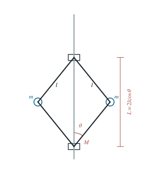

飞球调速器的平衡与两种小振动
以铰臂角为广义坐标，比较定角速度与定角动量条件下的振动频率。
1 题目
1.1 物理情境
两颗质量均为 的飞球，分别由上下各两根长度均为 的轻铰臂连接固定的上套筒与可沿竖直轴滑动的下套筒。下套筒质量为 ；左右结构对称。
1.2 物理过程
先令主轴以给定角速度 转动，装置达到非零张角的相对平衡，并给下套筒一个微小竖直扰动。再令主轴自由转动，从同一平衡状态出发施加同类扰动。
1.3 已知参数和理想化假设
；铰臂与铰链无质量、无摩擦；下套筒不转动且主轴轴承不对系统施加绕轴力矩。自由转轴情形总轴向角动量守恒。设铰臂与竖直轴夹角为 ，并要求非零张角平衡存在。
1.4 求解目标
求非零张角平衡时两套筒间距 ；求轴被强制保持角速度时的小振动角频率 ，以及轴可自由转动时的 。

图中每根斜臂长 ，球到轴距离 ，两套筒距离 。
2 思路与提示
比较转轴角速度被驱动器固定与轴向角动量守恒两种约束。先用铰臂夹角表达球的半径与套筒高度，再分别建立相应的有效势。
3 解答展开 / 收起
3.1 建立唯一广义坐标
几何约束给出 ，每颗球相对上套筒的竖直坐标为 ，下套筒坐标为 。两球的径向速度大小为 ，竖直速度大小为 。由此得出与 有关的动能、轴向转动惯量与重力势能：
3.2 定角速度下求非零张角平衡
外部驱动保持 时，控制角 的有效势是重力势能减去离心项 。这与把整套转动动能加到普通静态势能不同，因为驱动器持续提供转动功。
将有效势求导，并取 ，得到
因此内点平衡要求 。合拢态 也是几何边界处的一种构形，但不属于这里所求的非零张角平衡。
3.3 定角速度小扰动
在 且 时，二次动能对应的广义惯量为 ；由上式直接求二阶导数得 。拉格朗日方程线性化为
3.4 自由转轴小扰动
释放驱动后，外力对轴无力矩。初始轴向角动量 保持不变，瞬时角速度因而是 。消去循环角后，有效势应改为
自由转轴状态下原平衡角仍满足 。再求曲率并用前述平衡关系化简：
4 方法与讨论
两种频率的分母相同，因铰臂与套筒的径向运动惯量没有改变；分子的差异完全来自扰动时轴速是否随 改变。由 可知自由转轴振动较快。